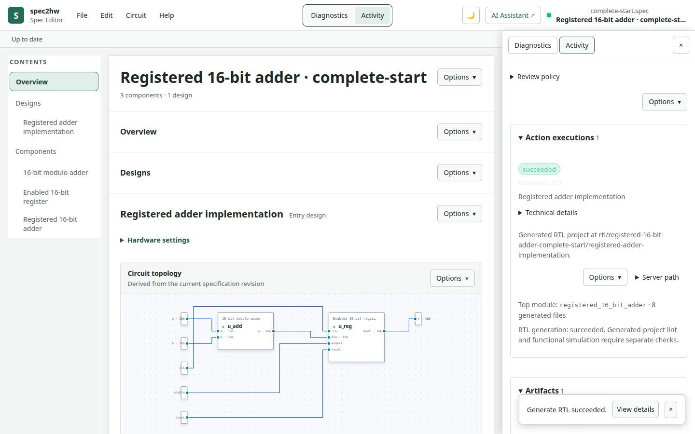
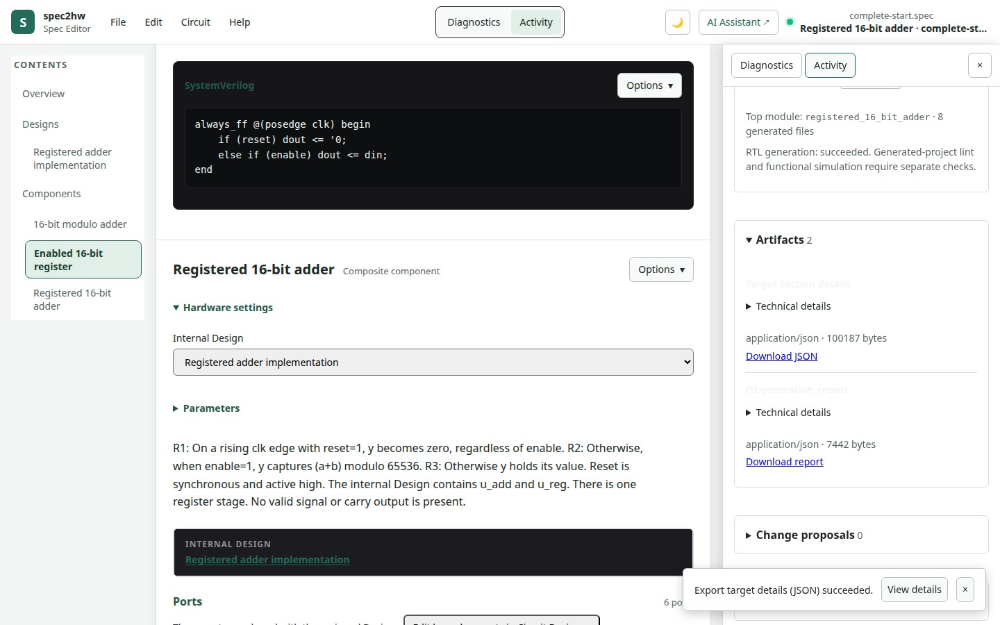

SPEC EDITOR · GUIDED PRACTICE
Track an Activity and retrieve its outputs
Inspect a real job, download its output, and keep job completion separate from source changes.
Before you start
Spec Editor and the prepared Activity start. The target-details Activity needs no model or compiler; RTL generation additionally needs Verilator and Make.
Read each action, do it, then compare the expected result before continuing. Use a fresh prepared start to retry. Reading time and automated execution time are not measured learner practice time.
Actions
Inspect the saved target
Openactivity-start.spec. Locate the containing Registered 16-bit adder.Expected result: The completed source has two leaf implementations and seven nets.
Launch a diagnostic export
On the containing Component select Options → Export target details (JSON).Expected result: A real job starts against saved source. Its launch does not open the side panel.
Open Activity
Select the Activity toolbar button or the job notification’s View details.Expected result: The Activity tab shows the job target and its current state beside the document.

Activity keeps published results beside the Spec document. Select the image to view its full size. Inspect progress and cancellation
Inspect queued/running state when present. A running job offers Cancel. If this short export has already finished, leave it completed; cancellation is optional practice on a separate running job.Expected result: Completed and cancelled are distinct outcomes. Do not report a completed export as a cancelled job.
Read the terminal result
Wait for success or failure. Expand the result’s details and compare target and source revision.Expected result: The report identifies the source actually used. An export does not run RTL verification or change source.
Download the published JSON
Select Download JSON on Target Section details. Save it below the tutorial run directory.Expected result: The downloaded file belongs to this document and job.

The target-details job provides a document-bound Download JSON link. Select the image to view its full size. Inspect content and provenance
Open the JSON. Compare its target and source_revision_hash with the job. Inspect the reachable Section records.Expected result: The export includes saved target content and source identity, not a simulated hardware result.
Inspect review areas
Find change reviews and AI Assistant submission history in Activity. A pending proposal must be reviewed before it can be counted as saved content; follow the restricted-review guide for a live exercise.Expected result: Job completion, pending review, accepted changes, and submission history have separate meanings.
Reopen and compare
Close the panel, reopen the same Spec, and reopen Activity. Compare the source and retained job result.Expected result: The diagnostic export did not modify hardware. Downloads and reviews retain document and revision checks.


Check your result
A real target-details job completed, its JSON was downloaded, and its target/revision agree with the saved source.
Try it yourself
Launch Generate RTL on a separate completed copy, inspect its progress and available outputs, and cancel only while a cancellation control is available. Record the actual outcome.
If it fails
If a download fails, compare document binding and job identity before retrying. If no running job remains, cancellation practice is incomplete; do not fabricate progress or reuse a different document’s output.
Continue
CONTINUEExplore another feature →Reference: spec editor · Complete example